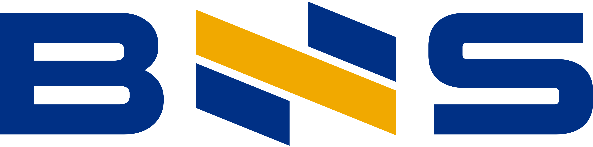
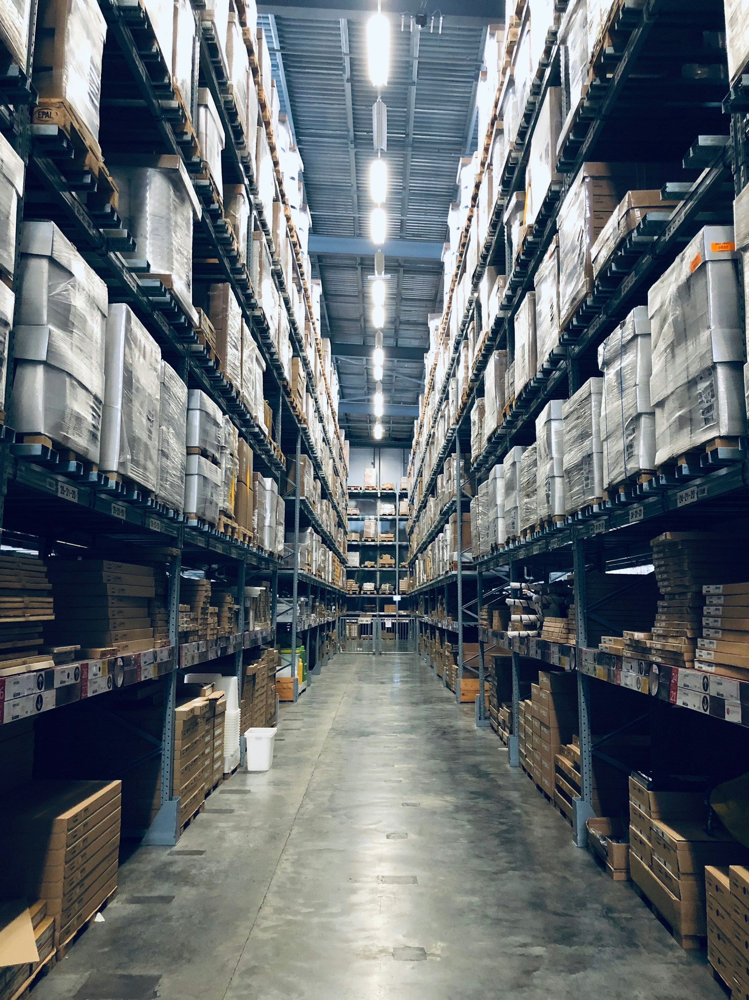

ILUSTRASI PRODUK
01
Komputer &
Perlengkapannya
Komputer dan perangkat pendukung untuk kebutuhan kerja. Spesifikasi disesuaikan dengan penggunaan Anda.
Bahas kebutuhan komputer ↗
PT BARKAH NAWABIL SANTOSO
PT BARKAH NAWABIL SANTOSO
Komputer, perlengkapan kantor, alat tulis, dan produk kertas.
Berangkat dari kebutuhan. Bertumbuh melalui kerja sama.
01 / TENTANG BNS
Membangun hubungan usaha melalui kebutuhan yang dipahami dan ruang lingkup yang disepakati.
PT Barkah Nawabil Santoso (BNS) merupakan perusahaan swasta nasional yang baru dibentuk dan berkedudukan di Gresik, Jawa Timur. Pengadaan barang menjadi fokus utama kami dalam mengembangkan kerja sama dengan dunia usaha.
Kami memulai setiap pembahasan dengan mengenali spesifikasi, jumlah, anggaran, dan waktu kebutuhan Anda. Dari sana, kita dapat meninjau pilihan serta menyepakati langkah pengadaan yang sesuai.
02 / LINGKUP PENGADAAN
Pilih kategori untuk mulai membahas kebutuhan. Produk, merek, spesifikasi, dan ketersediaan dikonfirmasi pada tahap permintaan penawaran.
Komputer dan perangkat pendukung untuk kebutuhan kerja. Spesifikasi disesuaikan dengan penggunaan Anda.
Bahas kebutuhan komputer ↗Kebutuhan mesin kantor untuk menunjang aktivitas administrasi dan operasional sehari-hari.
Bahas kebutuhan kantor ↗Alat tulis, perlengkapan gambar, dan kebutuhan administrasi untuk melengkapi ruang kerja.
Bahas kebutuhan ATK ↗Kertas, karton, serta hasil pencetakan dan penerbitan untuk kebutuhan dokumentasi dan usaha.
Bahas kebutuhan kertas ↗Belum menemukan kategori yang sesuai?
Ceritakan kebutuhan pengadaan Anda →LANDASAN KERJA SAMA
Sebagai perusahaan yang sedang bertumbuh, kami menempatkan keterbukaan sebagai dasar dalam membangun hubungan usaha.
Spesifikasi dan tujuan penggunaan menjadi titik awal pembahasan, sehingga pilihan barang memiliki acuan yang jelas.
Jumlah, pilihan produk, biaya, dan waktu dibahas sebelum pengadaan dilanjutkan.
Ketersediaan serta kesesuaian kebutuhan dikonfirmasi dalam percakapan, termasuk bila ada pilihan alternatif.
03 / PROSES KERJA SAMA
Bagikan jenis barang, spesifikasi, jumlah, lokasi, dan waktu kebutuhan Anda.
Kita tinjau spesifikasi, ketersediaan, dan kebutuhan penawaran bersama.
Konfirmasikan rincian barang, biaya, dan ketentuan pelaksanaan sebelum melanjutkan.
PERTANYAAN UMUM
Gunakan formulir di bawah untuk menyiapkan ringkasan kebutuhan, kemudian lanjutkan melalui WhatsApp. Cantumkan spesifikasi dan jumlah agar pembahasan lebih terarah.
Website ini memperkenalkan kategori pengadaan. Pilihan produk, merek, harga, dan stok perlu dikonfirmasi sesuai kebutuhan pada saat pembahasan.
Jumlah minimum, cakupan pengiriman, biaya, dan perkiraan waktu dibahas sesuai jenis barang, jumlah pesanan, serta lokasi tujuan.
Dokumen pendirian juga memuat ruang lingkup jasa dan dukungan operasional. Fokus penawaran website saat ini adalah pengadaan barang. Hubungi kami untuk membahas kesesuaian kebutuhan lainnya.
04 / HUBUNGI KAMI
Daftar kebutuhan sederhana sudah cukup untuk memulai. Lengkapi rincian yang tersedia, lalu kita bahas langkah selanjutnya.